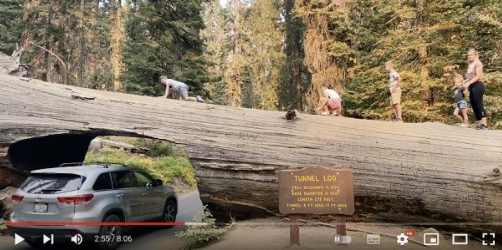
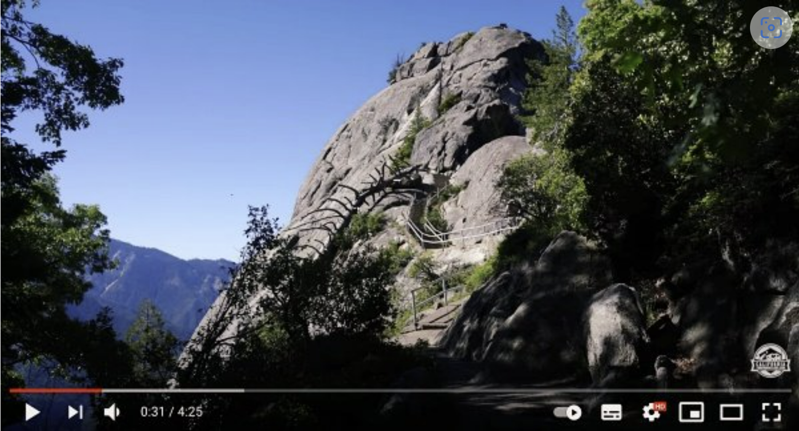

优胜美地 + 红衫国王谷 + 太浩湖
红杉和国王峡谷 (Sequoia & Kings Canyon National Parks)
官网：Sequoia & Kings Canyon National Parks
红杉公园区域/198公路的景点
1. General Sherman Tree 观看世界上最大的树，游览30分钟-1小时，推荐度★★★★★
有停车场🚗，1.2mile trial尽头是general sherman tree
2. Big Tree Trail 巨树步道，游览30分钟-1小时，推荐度★★★
可选，1.3mile的trial。定位到 Giant Forest Museum 的停车场，然后步行7分钟到 Trailhead
3. Tunnel Log过车树洞 + 大树根，游览30分钟-1小时（区域不大，但可能排队），推荐度★★★★

在Crescent Meadow Road上。
4. Moro Rock Trail登山步道，爬山需30-40分钟（但还要考虑班车往返的时间），推荐度★★★★
夏季的周末，只能将车停到 Giant Forest Museum，然后乘坐免费Shuttle Bus前往步道
工作日期间，则可以自驾到步道起点 Moro Rock Trail，但停车场非常小

国王峡谷区/180公路的景点
1. General Grant Tree 观赏巨树，游览30分钟-1小时，推荐度★★★★★
The Nation’s Christmas Tree，是公园内的第三大的巨杉。
定位到 General Grant Tree，走1mile的trial
边上的Fallen Monarch 是一棵倒下的，可以从中间步行穿过的巨树
2. Panoramic Point远眺群山，游览15-30分钟，推荐度★★
区域内唯一的山景俯瞰点，但景色其实一般
定位到 Kings Canyon Panoramic Point，需从180公路要拐进一条土路，单程驾车10分钟
3. Hume Lake湖畔野餐点/‘小瑞士’，游览30分钟-1小时，推荐度★★★★
可定位到湖西南侧的 Hume Lake Christian Camps（有停车场/餐厅等）
晨雾看起来挺好看的，但是白天看起来一般般
4. Grizzly Falls瀑布野餐点，游览30分钟-1小时，推荐度★★★
一个小瀑布
5. Zumwalt Meadow山景步道/‘小优胜美地’，游览40分钟-1.5小时，推荐度★★★★
定位到 Zumwalt Meadows Trailhead，然后徒步，是一条1.5mile的往返步道，安排40分钟-1.5小时合适
猛犸湖魔鬼柱保护区 (Devils Postpile National Monument)
官网：Devils Postpile National Monument (U.S. National Park Service) (nps.gov)
地层在地质世界中是罕见的景象，是世界上最好的柱状玄武岩之一。它的柱子高达60英尺，并显示出惊人的对称性
Hot Creek Geological Site
小型黄石，一年一度的鳟鱼节，可以看到鳟鱼孕育的全过程 Hot Creek Trout Hatchery 但大概率我们遇不上。

克劳利湖石柱群（Crowley Lake Stone Columns)
如果不是強悍的四驱越野车、高超的技术能越过陡坡，就只能徒步8公里才能到崖顶

优胜美地 (Yosemite)
地图：详细地图
公园入口
优胜美地一共有四个入口：
-
Big Oak Flat Entrance，位于120西段，是南湾区前往超快的路线，山路平稳好开。
-
Arch Rock Entrance，位于140，从湾区出发会比120远一丢丢，就连冬季也几乎不会关闭的一条路。去过的小伙伴都说这条路的风景比其他几条都漂亮。
-
South Entrance，位于41，这条路线山路较多，车速慢。如果不是必须，建议不选择这条路线。
-
Tioga Pass Entrance，位于120东段，路况不错，开着比较轻松，但是冬季大雪时会封路。

公园外住宿
-
Big Oak Flat Entrance 入口：Groveland，距离 Valley 大概一小时车程。
-
Arch Rock Entrance 入口：El Portal，距离 Valley 大概半小时车程，距离公园超近所以也比较紧俏，这里还有一个油价很高的加油站；Mariposa，距离 Valley 大概一小时车程。
-
South Entrance 入口：Yosemite West，距离 Valley 大概半小时车程；Fish Camp，距离 Valley 大概一小时车程；Oakhurst，距离 Valley 大概一个半小时车程。
-
Tioga Pass Entrance 入口：Lee Vining，距离 Valley 大概两小时车程，冬季不会开放。
注意事项
-
国家公园内很少有加油站，Valley 里是没有的，所以一定在进公园之前确保油量充足。120沿路上的加油站如 Tracy、Modesto都不算贵。
-
旺季时自驾去优胜美地，热门景点的停车位非常紧俏，需要注意。
-
公园内会提供免费的巴士。自行驱车到游客中心后，也能选择乘坐巴士逛公园。Public Transportation
-
公园内没有网络，提前下载离线地图和音乐
-
带足够的水，吃的，以及驱蚊的
Tunnel View | 观景点
公园内最著名的观景点，可以同时看到 El Capitan，Bridalveil Fall 以及 Half Dome

Bridalveil Fall | 新娘面纱瀑布
高189米，全年有水，5月水量最大
瀑布旁有停车场，从停车场步行10分钟，即可观赏瀑布
El Capitan | 酋长岩
3000英尺高，世界上最大的单体花岗岩
将车停在 EI Capitan Meadow 旁的路边仰视即可

Yosemite Falls | 优胜美地瀑布
公园内最著名，最高的瀑布
11月到7月有水，5月水量最大，八月，可能，也许，看不到水
Yosemite Valley View | 观景点
从下方看优胜美地全貌
Glacier Point | 冰川点观景点
从山顶看优胜美地全貌，优质的观赏日落点
但是貌似2022年那条路不开，也就是说如果要去得走往返9mile，攀升3200ft ( ；′⌒`)
Taft Point | 观景点
冰川点隔壁的拍照的，据说景色一般，且无护栏（害怕）
用 Taft Point Trailhead 导航定位
Trail: Taft Point and The Fissures
Half Dome
可以攀爬，但是要总共20刀外加摇号获得资格，申请连接

Mist Trail
往返6mile长，约需6小时，难度中高，Elevation gain 659米
途径Vernal Fall 和 Nevada Fall，如果就此返回则总共需要3小时
交通：
搭乘公园的 Shuttle Bus 到 #16站 Happy Isles Bridge - Mist Trail 的起点；
也可以将车停在 Yosemite Valley Trailhead Parking，然后步行15分钟到 Happy Isles Bridge
Tenaya Lake
高山湖泊，人不多

莫诺湖 (Mono Lake)
有免费的讲解，叫tufa什么的，但是得卡时间点
官网Mono Lake Committee | Keep Saving Mono Lake
South Tufa附近还有一片火山口Mono Craters，可以hiking ；另外Navy Beach每年6月最后一个周末到Labor Day每个周末都有Canoe Tour，据说在湖上可以看到水下的tufa！详情见官网http://www.monolake.org/visit/canoe
莫诺湖（Mono Lake）在优胜美地国家公园东方入口附近，靠近内华达州，是加州第二大湖。它是座古老的湖泊，存在世界上的时间已经超过七十万年，因此成为北美最古老的湖泊之一。湖水没有出口，全靠蒸发，因此湖内留下大量盐矿。莫诺湖最出名的景色是南岸South Tufa Area的Tufa-石灰岩塔。每年6-8月是这里的旅游旺季。这里还是有名的观鸟胜地，每年有200万候鸟在这里筑巢栖息。

博迪鬼城 (Bodie Ghost Town)
博迪被认为是该国最好，保存最完好，历史最悠久的鬼城。早期西部淘金潮产生的小镇

太浩湖 (Lake Tahoe)
Sugar Pine Point 小众沙滩，游客少，停车容易，能看到水中铁轨，可安排1-2小时。停车10刀

**Sand Harbor 最美沙滩：**开放时间7am - 日落后1小时，停车10美金/车，需要早起抢车位：），不过也可开车到 Incline Village，然后坐 East Shore Express巴士上来

**Secret Cove 天体海滩：**是太浩湖著名的天体沙滩 Clothing-Optional Beach，湖水特别清澈。停车场在 Chimney Beach 附近，很小但免费，距离沙滩0.6英里+，步行需15-20分钟，街趴可能有三百多刀的罚款
**Emerald Bay State Park 翡翠湾：**定位到Emerald Bay State Park Lookout。停车费5美金，要早去，暑期10am后很难找到停车位

（虽然应该不涉及版权问题，不过介于参考了网上一大堆的攻略，可以当作全是quote的）